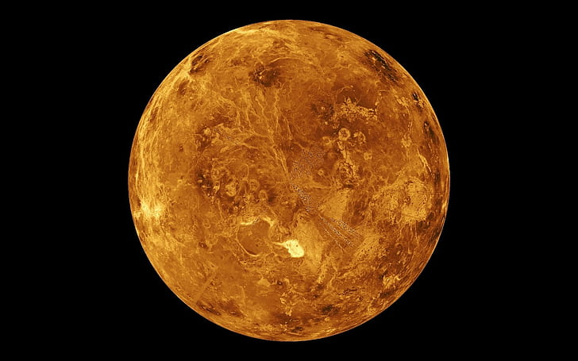
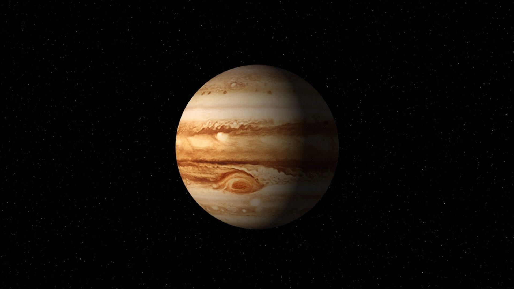
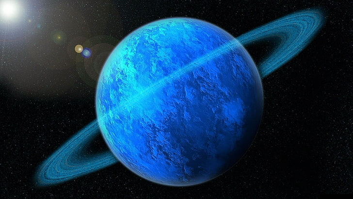
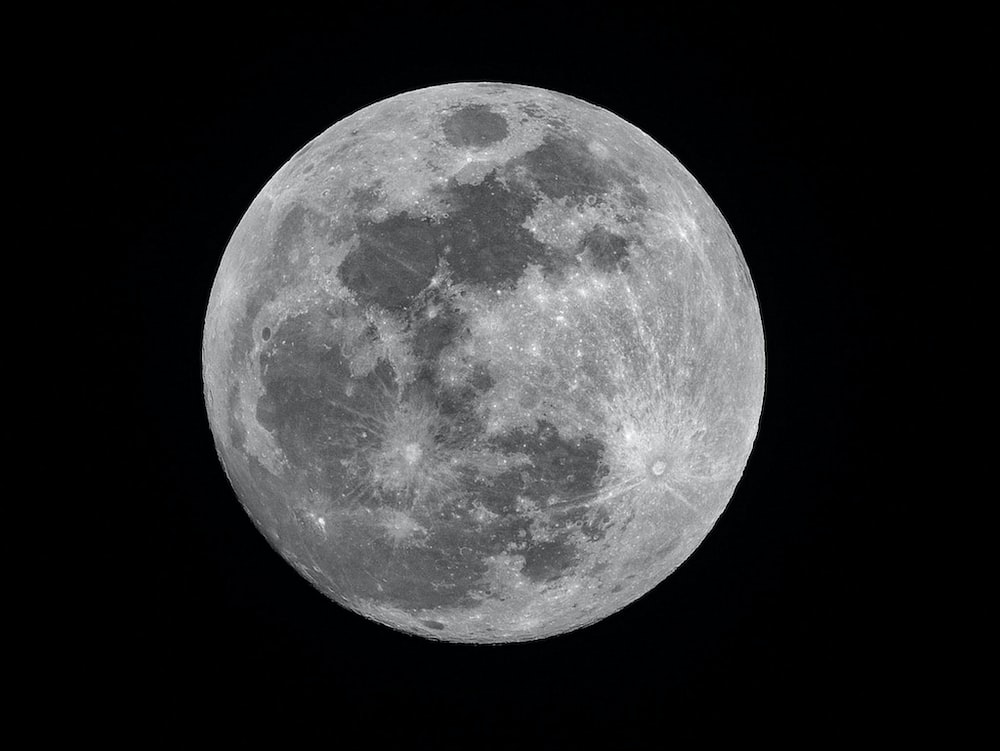

SOLAR SYSTEM
PLANETS EXPLORATON
SUN

The Sun, often referred to as the heart of our solar system, is a blazing, luminous sphere of superheated gas. It provides the life-giving energy that sustains all the planets, including Earth, by means of nuclear fusion at its core. This process involves the conversion of hydrogen into helium, releasing a tremendous amount of energy and producing the Sun's brilliant light and heat. The Sun's powerful magnetic fields influence the solar system, with the solar wind, sunspots, and solar flares affecting Earth's space environment. The Sun is essential to life as we know it, and its dynamics and behavior continue to be subjects of extensive study, enabling us to understand not only the workings of our solar system but also the broader universe.
MERCURY
Mercury, the innermost planet in our solar system, is a scorching and enigmatic world that orbits closest to the Sun. This small, rocky planet is a study in extremes. With daytime temperatures soaring to a blistering 800 degrees Fahrenheit (427 degrees Celsius) and nighttime temperatures plummeting to -290 degrees Fahrenheit (-179 degrees Celsius), its surface experiences some of the most extreme temperature variations in the solar system. Mercury's surface is heavily cratered, with vast plains and towering cliffs, evidence of its tumultuous geological history. With little atmosphere to speak of, Mercury is exposed to the harshness of space, making it a captivating subject of study for scientists and space enthusiasts alike. Various missions, including NASA's MESSENGER, have ventured to this fiery world, expanding our understanding of the innermost secrets of our cosmic neighborhood.
VENUS
Venus, often referred to as Earth's "sister planet" due to its similar size and composition, is a captivating enigma in our solar system. However, this beauty masks a turbulent reality. Venus has a thick, toxic atmosphere, primarily composed of carbon dioxide, with crushing surface pressures and scorching temperatures that can exceed 900 degrees Fahrenheit (475 degrees Celsius), making it the hottest planet in our system. Its surface is adorned with vast volcanic plains, highland regions, and a multitude of impact craters. Despite its harsh conditions, Venus has been a target of fascination for planetary scientists, and missions like NASA's Magellan have unveiled many of its secrets, leading to a deeper understanding of the greenhouse effect and the challenges of planetary exploration.
EARTH

Earth, our home in the cosmos, is a remarkable and diverse world like no other. Situated in the "Goldilocks zone" of our solar system, it boasts the perfect conditions for life to thrive. With its breathtaking landscapes, from towering mountains to deep oceans, and a life-sustaining atmosphere rich in oxygen, Earth stands out as a haven for a staggering variety of species, including humans. Our planet's unique blend of geology, climate, and ecosystems has given rise to a rich tapestry of life. But it's also a testament to the fragility of our environment, as human activities impact the planet's delicate balance. As we explore the universe, Earth serves as a reminder of the preciousness of our world and the importance of protecting and preserving it for future generations.
MARS

Mars, often referred to as the "Red Planet" due to its rusty hue, is a captivating destination in our solar system. As Earth's neighboring planet, it has been a focal point for space exploration. With its desolate, rocky terrain and a thin, carbon dioxide-dominated atmosphere, Mars presents a stark contrast to our home planet. It's a place of great intrigue, known for its polar ice caps, ancient riverbeds, and the possibility of subsurface water. Mars has captivated scientists and space enthusiasts with the potential for past or present life and offers a glimpse into the challenges of future human colonization. With numerous missions and rovers actively studying its surface, Mars continues to be a subject of fascination, holding secrets that may one day unlock the mysteries of our solar system.
JUPITER
Jupiter, the largest planet in our solar system, is a majestic gas giant that commands attention with its immense size and vibrant bands of clouds. It's a world of superlatives, boasting the most massive planetary body and an intense magnetic field. Jupiter's iconic feature is the Great Red Spot, a colossal storm larger than Earth, which has raged for centuries. With no solid surface, this massive planet is mostly composed of hydrogen and helium, making it distinct from the terrestrial worlds. Jupiter's numerous moons, like Europa and Ganymede, have been subjects of great interest due to their potential for harboring subsurface oceans and signs of life. Jupiter plays a crucial role in shaping our solar system, influencing the orbits and dynamics of neighboring planets and asteroids, making it a compelling destination for scientific exploration.
SATURN

Saturn, often referred to as the "Ringed Planet," is a celestial wonder in our solar system, renowned for its stunning system of dazzling rings. This gas giant, second in size only to Jupiter, boasts a remarkable set of icy rings that encircle the planet. Saturn's rings, composed of countless particles, create a breathtaking spectacle visible even from Earth with a telescope. Its banded cloud patterns and numerous moons, including the intriguing Titan and Enceladus, have captured the imagination of scientists and space enthusiasts alike. Saturn's exquisite beauty and unique features make it a target for in-depth exploration and study, deepening our understanding of the cosmos and the formation of planetary ring systems.
URANUS
Uranus, often dubbed the "Ice Giant," is an enigmatic and distant member of our solar system. It stands out due to its unusual feature: a near-horizontal axis of rotation, causing it to spin on its side. This unique orientation gives Uranus a peculiar roll-like motion as it orbits the Sun. The planet's pale blue color is the result of methane in its atmosphere, which obscures much of its surface features. Uranus is encircled by a system of faint rings and a collection of intriguing moons. Its deep, frigid atmosphere, composed of hydrogen, helium, and ices, conceals many mysteries waiting to be unraveled. Despite its relative obscurity, Uranus is a captivating subject for planetary scientists, and missions like Voyager 2 have provided essential insights into its characteristics and complex behavior.
NEPTUNE

Neptune, the eighth and farthest planet from the Sun, is a distant world of intense beauty and mystery. Its deep blue color comes from the presence of methane in its atmosphere, and its turbulent cloud patterns and strong winds make it one of the windiest places in our solar system. Neptune is an ice giant, similar in composition to Uranus, with a core of rock and metal surrounded by a deep layer of ices and a gaseous envelope. The planet is also known for its system of rings and a fascinating collection of moons, including Triton, a moon with geysers spewing nitrogen and an unusual retrograde orbit. While Neptune's remote location makes exploration a significant challenge, the planet's intriguing characteristics continue to intrigue astronomers and space enthusiasts, offering a glimpse into the diverse wonders of our celestial neighborhood.
MOON
The Moon, Earth's faithful companion, is the only natural satellite in our solar system. Its familiar presence in the night sky has inspired wonder and curiosity for generations. The Moon's influence on Earth extends beyond its gravitational pull, as it affects tides and has played a crucial role in shaping our planet's geology and climate. It is a lifeless world with a stark, cratered surface, marked by vast plains and towering mountains. The Moon has been the target of human exploration, with NASA's Apollo missions putting astronauts on its surface in the 1960s and '70s. It continues to be a subject of scientific study, with potential lunar bases and future missions aiming to unlock its secrets and expand our understanding of our cosmic neighborhood.
DWARF PLANETS